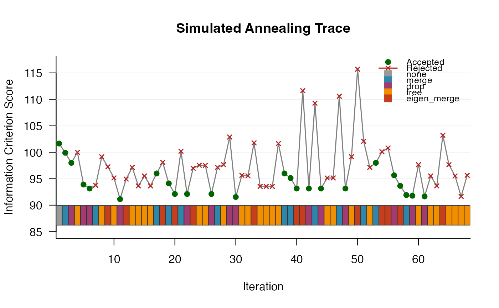

corHMMDredge.RdThis function automates the search for the best-fitting model of discrete character evolution. It uses a combination of simulated annealing and optional regularization to explore a vast space of possible model structures, identifying optimal models without requiring the user to manually specify and compare candidate models.
corHMMDredge(phy, data, max.rate.cat=1, init.rate.cat=1,
root.p="maddfitz", tip.fog=NULL, fog.ip=0.01, pen.type="l1", lambda=0,
drop.threshold=1e-7, criterion="AIC", merge.threshold=0, index_mat=NULL,
node.states="none", fixed.nodes=FALSE, ip=NULL, nstarts=1, n.cores=1,
get.tip.states=FALSE, lewis.asc.bias=FALSE, collapse=FALSE,
lower.bound=1e-10, upper.bound=100, opts=NULL, verbose=TRUE,
p=NULL, rate.cat=NULL, use_RTMB=TRUE, max.iterations=1000,
initial.temp=2, cooling.rate=0.95, temp.schedule="exponential",
seed=NULL, checkpoint.file=NULL, checkpoint.interval=50)A phylogenetic tree of class "phylo".
A data frame with two or more columns: the first containing species names and the second onwards containing the discrete character states.
The maximum number of hidden rate categories to
explore. The search runs sequentially from init.rate.cat up to
this value.
The initial number of hidden rate categories to begin the search. Defaults to 1.
Specifies the prior on the root state probabilities. Can
be "maddfitz", "yang", a numeric vector of
probabilities, or NULL (see corHMM).
Optional specification of tip observation error
(misclassification probabilities). If a numeric value less than 1 is
supplied it is treated as a fixed per-state fog probability; if
sum(tip.fog) >= 1 the fog probabilities are estimated during
optimisation.
Starting value for tip fog probability estimation. Defaults to 0.01.
The type of regularization penalty to apply. Options
are "l1" (lasso), "l2" (ridge), and "er" (equal
rates penalty). Defaults to "l1".
A hyper-parameter (0 to 1) controlling the strength of the regularization penalty. A value of 0 means no penalization.
The rate value below which a parameter becomes a candidate for being dropped (fixed to zero) during a drop move.
The information criterion used to evaluate and compare
models during the search. Either "AIC" or "AICc".
Defaults to "AIC".
The absolute difference between two rate estimates below which they become candidates for merging (constrained equal) during a merge move.
An optional user-specified starting rate matrix. If
NULL the search starts from a fully parameterized (all rates
different) model.
The method for ancestral state reconstruction.
Options are "marginal", "joint", "scaled", or
"none". Defaults to "none" during the search for speed;
set to "marginal" if ancestral states are needed on the
returned models.
Logical. Whether to fix the states of labelled internal nodes in the provided phylogeny.
Optional numeric vector of initial parameter values for the optimiser.
The number of random restarts to perform during optimisation for each candidate model. Higher values improve the chance of finding the global likelihood peak at the cost of computation time.
The number of cores to use for parallel random restarts within a single model fit.
Logical. Whether to estimate marginal state probabilities at the tips.
Logical. Whether to correct for ascertainment bias following Lewis (2001).
Logical. Whether to collapse unobserved character state combinations.
Lower and upper bounds for rate parameter estimates.
A list of control options passed to the nloptr
optimiser.
Logical. Whether to print search progress to the console.
Used together to evaluate a single fixed model. If both are provided the dredge search is skipped and a single model fit is returned immediately.
Logical. Whether to use the RTMB automatic
differentiation backend for gradient-based optimisation. Defaults to
TRUE. When TRUE the gradient is computed via autodifferentiation,
which is substantially faster for complex models.
The maximum number of simulated annealing iterations within each rate category.
The starting temperature for the simulated annealing algorithm. Higher values allow broader exploration by accepting worse models with higher probability early in the search.
The multiplicative rate at which temperature decreases per iteration (\(T_{new} = T_{old} \times \mathrm{cooling.rate}\)). Must be between 0 and 1. Defaults to 0.95.
The cooling schedule. Options are
"exponential" and "linear".
An integer random seed for reproducibility.
Optional path to an RDS file used for
checkpointing. If the file already exists the search resumes from the
saved state; otherwise a new checkpoint is created at regular
intervals. When max.rate.cat > 1 a separate checkpoint file is
written per rate category (e.g. ckpt_rc1.rds,
ckpt_rc2.rds).
Number of iterations between checkpoint saves. Defaults to 50.
This function implements an automated model discovery framework for phylogenetic comparative methods. The core of the method is a simulated annealing heuristic that explores the space of discrete character evolution models combined with optional regularization.
Proposal moves. At each iteration the algorithm proposes one of four modifications to the current model's rate matrix index structure:
Drop: A rate parameter is removed from the model (fixed to zero). Parameters with smaller estimated values are preferentially targeted.
Merge: Two or more rate parameters are constrained to be equal. Pairs with similar estimated values are preferentially targeted.
Free: A currently constrained or dropped parameter is freed to be estimated independently, expanding model complexity[1].
Eigen-merge: Parameters are merged based on the eigenstructure of the current rate matrix rather than raw value proximity[2].
[1] Only positions permitted by the maximum index matrix are eligible, preventing proposals that violate the structural constraints of the model space.
[2] Each free parameter is represented as a profile of its absolute loadings onto the eigenvectors of Q. Parameters whose profiles have high cosine similarity – meaning they drive transitions along the same directions in state space – are identified as functionally redundant and proposed for merging. This move can identify candidates that value-based merging would miss, and is particularly effective for complex multi-state or multi-rate-category models.
Acceptance criterion. A proposed model that improves the information criterion score is always accepted. A worse model may still be accepted with probability \(\exp(-\Delta / T)\), where \(\Delta\) is the score difference and \(T\) is the current temperature. As temperature cools the algorithm transitions from broad exploration to focused exploitation.
Restart mechanism. To avoid entrapment in local optima the
algorithm periodically restarts from a previously accepted model when the
search has stagnated (no improvement in restart.interval
iterations). The restart event is recorded in the trace for diagnostic
purposes.
Regularization. An optional L1 or L2 penalty on the rate
parameters is incorporated directly into the likelihood during
optimisation. The lambda parameter controls the penalty strength.
Setting lambda = 0 recovers standard maximum likelihood, making
scores directly comparable with corHMM.
An object of class "corhmm.dredge", which is a list of unique
accepted models pruned to remove redundant entries (identical likelihoods
and parameter counts). Each element is a standard corhmm object
including $phy, $data, and $data.legend. The list
is ordered by the information criterion score, best model first.
Full simulated annealing diagnostics for each rate category explored
(per-iteration scores, move types, acceptance decisions) are stored as a
hidden attribute and can be accessed via
attr(result, "dredge_history"). This attribute is used
automatically by plotDredgeTrace and is displayed in the
print summary.
Boyko, J.D. (2026). Automatic Discovery of Optimal Discrete Character Models. Systematic Biology, In press.
Lewis, P.O. (2001). A likelihood approach to estimating phylogeny from discrete morphological character data. Systematic Biology, 50(6), 913-925.
Pagel, M., & Meade, A. (2006). Bayesian analysis of correlated evolution of discrete characters by reversible-jump Markov chain Monte Carlo. The American Naturalist, 167(6), 808-825.
Kalyaanamoorthy, S., Minh, B.Q., Wong, T.K.F., von Haeseler, A., & Jermiin, L.S. (2017). ModelFinder: fast model selection for accurate phylogenetic estimates. Nature Methods, 14, 587-589.
Burnham, K.P., & Anderson, D.R. (2002). Model selection and multimodel inference: a practical information-theoretic approach. Springer-Verlag.
Zhou, Y., Gao, M., Chen, Y., Shi, X. (2024). Adaptive Penalized Likelihood method for Markov Chains.
# \donttest{
library(corHMM)
data(primates)
phy <- multi2di(primates[[1]])
phy$edge.length <- phy$edge.length + 1e-6
data <- primates[[2]]
# basic dredge search -- single rate category, L1 penalty
dredge_fits <- corHMMDredge(phy = phy,
data = data,
max.rate.cat = 1,
pen.type = "l1",
root.p = "maddfitz",
lambda = 1)
#> Beginning SA dredge...
#> SA parameters: max_iter = 1000 , init_temp = 2 , cooling = 0.95
#>
#> === RATE CATEGORY 1 ===
#> Initial AIC : 101.6472
#> 0|0 1|0 0|1 1|1
#> 0|0 NA 3 5 NA
#> 1|0 1 NA NA 7
#> 0|1 2 NA NA 8
#> 1|1 NA 4 6 NA
#>
#> Starting SA with AIC = 101.647
#> Restart strategy: fixed_steps
#> Iter 1 - New AIC: 99.901 - Best AIC: 99.901
#> Move: merge - Temp: 1.9 - Steps since restart: 1
#> Index Matrix:
#> 0|0 1|0 0|1 1|1
#> 0|0 NA 3 7 NA
#> 1|0 1 NA NA 6
#> 0|1 2 NA NA 7
#> 1|1 NA 4 5 NA
#>
#> Iter 2 - New AIC: 97.992 - Best AIC: 97.992
#> Move: drop - Temp: 1.805 - Steps since restart: 2
#> Index Matrix:
#> 0|0 1|0 0|1 1|1
#> 0|0 NA 2 6 NA
#> 1|0 NA NA NA 5
#> 0|1 1 NA NA 6
#> 1|1 NA 3 4 NA
#>
#> Iter 4 - New AIC: 93.901 - Best AIC: 93.901
#> Move: drop - Temp: 1.629 - Steps since restart: 4
#> Index Matrix:
#> 0|0 1|0 0|1 1|1
#> 0|0 NA NA 4 NA
#> 1|0 NA NA NA NA
#> 0|1 1 NA NA 4
#> 1|1 NA 2 3 NA
#>
#> Iter 5 - New AIC: 93.141 - Best AIC: 93.141
#> Move: drop - Temp: 1.5476 - Steps since restart: 5
#> Index Matrix:
#> 0|0 1|0 0|1 1|1
#> 0|0 NA NA NA NA
#> 1|0 NA NA NA NA
#> 0|1 1 NA NA 3
#> 1|1 NA NA 2 NA
#>
#> Iter 10 - New AIC: 91.141 - Best AIC: 91.141
#> Move: drop - Temp: 1.1975 - Steps since restart: 10
#> Index Matrix:
#> 0|0 1|0 0|1 1|1
#> 0|0 NA NA NA NA
#> 1|0 NA NA NA NA
#> 0|1 1 NA NA NA
#> 1|1 NA NA 2 NA
#>
#> RESTART 1 at iteration 30 ( fixed_steps ) - Back to a previous model AIC : 97.992
#> Iter 32 - New AIC: 95.992 - Best AIC: 91.141
#> Move: merge - Temp: 0.3874 - Steps since restart: 2
#> Index Matrix:
#> 0|0 1|0 0|1 1|1
#> 0|0 NA 5 4 NA
#> 1|0 NA NA NA 5
#> 0|1 1 NA NA 4
#> 1|1 NA 2 3 NA
#>
#> Iter 34 - New AIC: 94.111 - Best AIC: 91.141
#> Move: merge - Temp: 0.3496 - Steps since restart: 4
#> Index Matrix:
#> 0|0 1|0 0|1 1|1
#> 0|0 NA 3 4 NA
#> 1|0 NA NA NA 3
#> 0|1 1 NA NA 4
#> 1|1 NA 2 4 NA
#>
#> Iter 35 - New AIC: 92.111 - Best AIC: 91.141
#> Move: eigen_merge - Temp: 0.3322 - Steps since restart: 5
#> Index Matrix:
#> 0|0 1|0 0|1 1|1
#> 0|0 NA 3 2 NA
#> 1|0 NA NA NA 3
#> 0|1 1 NA NA 2
#> 1|1 NA 3 2 NA
#>
#> Iter 37 - New AIC: 92.111 - Best AIC: 91.141
#> Move: drop - Temp: 0.2998 - Steps since restart: 7
#> Index Matrix:
#> 0|0 1|0 0|1 1|1
#> 0|0 NA 3 2 NA
#> 1|0 NA NA NA 3
#> 0|1 1 NA NA 2
#> 1|1 NA NA 2 NA
#>
#> Iter 42 - New AIC: 92.111 - Best AIC: 91.141
#> Move: drop - Temp: 0.232 - Steps since restart: 12
#> Index Matrix:
#> 0|0 1|0 0|1 1|1
#> 0|0 NA 3 2 NA
#> 1|0 NA NA NA NA
#> 0|1 1 NA NA 2
#> 1|1 NA NA 2 NA
#>
#> Iter 49 - New AIC: 91.544 - Best AIC: 91.141
#> Move: drop - Temp: 0.162 - Steps since restart: 19
#> Index Matrix:
#> 0|0 1|0 0|1 1|1
#> 0|0 NA NA 2 NA
#> 1|0 NA NA NA NA
#> 0|1 1 NA NA NA
#> 1|1 NA NA 2 NA
#>
#> RESTART 2 at iteration 69 ( fixed_steps ) - Back to a previous model AIC : 97.992
#> Iter 71 - New AIC: 95.992 - Best AIC: 91.141
#> Move: merge - Temp: 0.0524 - Steps since restart: 2
#> Index Matrix:
#> 0|0 1|0 0|1 1|1
#> 0|0 NA 5 4 NA
#> 1|0 NA NA NA 3
#> 0|1 1 NA NA 4
#> 1|1 NA 5 2 NA
#>
#> Iter 72 - New AIC: 95.141 - Best AIC: 91.141
#> Move: merge - Temp: 0.0498 - Steps since restart: 3
#> Index Matrix:
#> 0|0 1|0 0|1 1|1
#> 0|0 NA 4 4 NA
#> 1|0 NA NA NA 3
#> 0|1 1 NA NA 4
#> 1|1 NA 4 2 NA
#>
#> Iter 73 - New AIC: 93.141 - Best AIC: 91.141
#> Move: eigen_merge - Temp: 0.0473 - Steps since restart: 4
#> Index Matrix:
#> 0|0 1|0 0|1 1|1
#> 0|0 NA 3 3 NA
#> 1|0 NA NA NA 3
#> 0|1 1 NA NA 3
#> 1|1 NA 3 2 NA
#>
#> Iter 75 - New AIC: 93.141 - Best AIC: 91.141
#> Move: drop - Temp: 0.0427 - Steps since restart: 6
#> Index Matrix:
#> 0|0 1|0 0|1 1|1
#> 0|0 NA 3 3 NA
#> 1|0 NA NA NA NA
#> 0|1 1 NA NA NA
#> 1|1 NA 3 2 NA
#>
#> Iter 77 - New AIC: 93.141 - Best AIC: 91.141
#> Move: drop - Temp: 0.0385 - Steps since restart: 8
#> Index Matrix:
#> 0|0 1|0 0|1 1|1
#> 0|0 NA 3 NA NA
#> 1|0 NA NA NA NA
#> 0|1 1 NA NA NA
#> 1|1 NA 3 2 NA
#>
#> Iter 84 - New AIC: 93.141 - Best AIC: 91.141
#> Move: drop - Temp: 0.0269 - Steps since restart: 15
#> Index Matrix:
#> 0|0 1|0 0|1 1|1
#> 0|0 NA 3 NA NA
#> 1|0 NA NA NA NA
#> 0|1 1 NA NA NA
#> 1|1 NA NA 2 NA
#>
#> RESTART 3 at iteration 104 ( fixed_steps ) - Back to a previous model AIC : 99.901
#> Iter 105 - New AIC: 97.992 - Best AIC: 91.141
#> Move: merge - Temp: 0.0092 - Steps since restart: 1
#> Index Matrix:
#> 0|0 1|0 0|1 1|1
#> 0|0 NA 2 5 NA
#> 1|0 6 NA NA 4
#> 0|1 1 NA NA 5
#> 1|1 NA 6 3 NA
#>
#> Iter 109 - New AIC: 95.647 - Best AIC: 91.141
#> Move: drop - Temp: 0.0075 - Steps since restart: 5
#> Index Matrix:
#> 0|0 1|0 0|1 1|1
#> 0|0 NA NA 4 NA
#> 1|0 5 NA NA 3
#> 0|1 1 NA NA NA
#> 1|1 NA NA 2 NA
#>
#> Iter 110 - New AIC: 93.647 - Best AIC: 91.141
#> Move: eigen_merge - Temp: 0.0071 - Steps since restart: 6
#> Index Matrix:
#> 0|0 1|0 0|1 1|1
#> 0|0 NA NA 3 NA
#> 1|0 4 NA NA 4
#> 0|1 1 NA NA NA
#> 1|1 NA NA 2 NA
#>
#> Iter 111 - New AIC: 91.914 - Best AIC: 91.141
#> Move: merge - Temp: 0.0067 - Steps since restart: 7
#> Index Matrix:
#> 0|0 1|0 0|1 1|1
#> 0|0 NA NA 3 NA
#> 1|0 3 NA NA 3
#> 0|1 1 NA NA NA
#> 1|1 NA NA 2 NA
#>
#> Iter 112 - New AIC: 91.781 - Best AIC: 91.141
#> Move: drop - Temp: 0.0064 - Steps since restart: 8
#> Index Matrix:
#> 0|0 1|0 0|1 1|1
#> 0|0 NA NA 3 NA
#> 1|0 3 NA NA NA
#> 0|1 1 NA NA NA
#> 1|1 NA NA 2 NA
#>
#> Iter 114 - New AIC: 91.647 - Best AIC: 91.141
#> Move: drop - Temp: 0.0058 - Steps since restart: 10
#> Index Matrix:
#> 0|0 1|0 0|1 1|1
#> 0|0 NA NA 3 NA
#> 1|0 NA NA NA NA
#> 0|1 1 NA NA NA
#> 1|1 NA NA 2 NA
#>
#> RESTART 4 at iteration 134 ( fixed_steps ) - Back to a previous model AIC : 91.544
#> Best AIC for Rate Class 1 after SA: 91.141
#> SA iterations: 149
#> SA acceptance rate: 0.333
#>
#> Done.
# printing shows a model table and the best model
print(dredge_fits)
#> corhmm.dredge object
#> Models retained : 10
#> Rate categories : 1
#> [Rate cat 1] Iterations: 149 | Acceptance rate: 33.3% | Restarts: 4 | Best AIC: 91.141
#>
#> np nRateCat lnLik AIC dAIC AICwt
#> 1 8 1 -42.82362 101.64725 10.5060831 0.001051951
#> 2 7 1 -42.95063 99.90126 8.7600946 0.002518443
#> 3 5 1 -42.99624 95.99248 4.8513155 0.017779222
#> 4 4 1 -42.95059 93.90119 2.7600204 0.050586160
#> 5 2 1 -43.57058 91.14117 0.0000000 0.201077059
#> 6 3 1 -43.05527 92.11055 0.9693835 0.123840751
#> 7 2 1 -43.77201 91.54401 0.4028476 0.164393743
#> 8 3 1 -42.82362 91.64724 0.5060702 0.156124397
#> 9 3 1 -42.95699 91.91399 0.7728241 0.136629947
#> 10 3 1 -42.89068 91.78135 0.6401861 0.145998327
#>
#> --- Best model ---
#>
#> Fit
#> lnL AIC AICc Rate.cat ntax
#> -43.57058 91.14117 91.35169 1 60
#>
#> Legend
#> [1] "T1|T2"
#> [1] "0|0" "1|0" "0|1" "1|1"
#>
#> Rates
#> 0|0 1|0 0|1 1|1
#> 0|0 NA NA NA NA
#> 1|0 NA NA NA NA
#> 0|1 0.02581609 NA NA NA
#> 1|1 NA NA 0.005027239 NA
#>
#> Arrived at a reliable solution
#>
#> Access SA trace: attr(x, 'dredge_history')
# trace plot uses the hidden dredge_history attribute automatically
plotDredgeTrace(dredge_fits)

# inspect the model table directly
mod_table <- getModelTable(dredge_fits)
print(mod_table)
#> np nRateCat lnLik AIC dAIC AICwt
#> 1 8 1 -42.82362 101.64725 10.5060831 0.001051951
#> 2 7 1 -42.95063 99.90126 8.7600946 0.002518443
#> 3 5 1 -42.99624 95.99248 4.8513155 0.017779222
#> 4 4 1 -42.95059 93.90119 2.7600204 0.050586160
#> 5 2 1 -43.57058 91.14117 0.0000000 0.201077059
#> 6 3 1 -43.05527 92.11055 0.9693835 0.123840751
#> 7 2 1 -43.77201 91.54401 0.4028476 0.164393743
#> 8 3 1 -42.82362 91.64724 0.5060702 0.156124397
#> 9 3 1 -42.95699 91.91399 0.7728241 0.136629947
#> 10 3 1 -42.89068 91.78135 0.6401861 0.145998327
# the best model for downstream analysis
best_fit <- dredge_fits[[which.min(mod_table$dAIC)]]
# access full SA diagnostics if needed
history <- attr(dredge_fits, "dredge_history")
# note: models inside dredge_history are stripped of $phy, $data, and
# $data.legend to save memory during the search. if you need complete
# objects, reattach the shared fields manually:
for(i in seq_along(history)){
for(j in seq_along(history[[i]]$accepted_models)){
history[[i]]$accepted_models[[j]]$phy <- dredge_fits[[1]]$phy
history[[i]]$accepted_models[[j]]$data <- dredge_fits[[1]]$data
history[[i]]$accepted_models[[j]]$data.legend <- dredge_fits[[1]]$data.legend
}
}
for(i in seq_along(history)){
for(j in seq_along(history[[i]]$every_model)){
if(is.null(history[[i]]$every_model[[j]])){next}
history[[i]]$every_model[[j]]$phy <- dredge_fits[[1]]$phy
history[[i]]$every_model[[j]]$data <- dredge_fits[[1]]$data
history[[i]]$every_model[[j]]$data.legend <- dredge_fits[[1]]$data.legend
}
}
# resume an interrupted run using checkpointing
# dredge_fits <- corHMMDredge(phy = phy,
# data = data,
# max.rate.cat = 1,
# lambda = 1,
# checkpoint.file = "dredge_checkpoint.rds",
# checkpoint.interval = 25)
# }